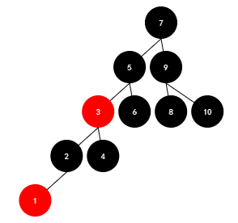
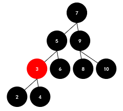
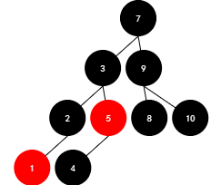
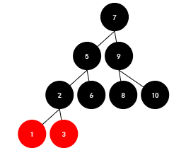
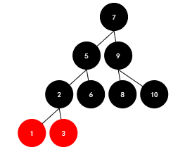
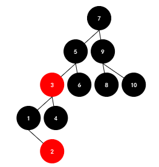
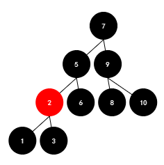
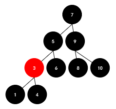
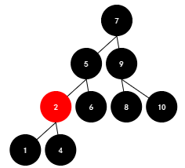
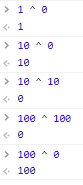

JS数据结构与算法
栈
模拟栈
1.2.3.4.5.6.7.8.9.10.11.12.13.14.15.16.17.18.19.20.21.Stack.prototype.push = function(item){this.items.push(item);}Stack.prototype.pop = function(){this.items.pop();}Stack.prototype.peek = function(){return this.items[this.items.length - 1];}Stack.prototype.IsEmpty = function(){return this.items.length === 0;}Stack.prototype.size = function(){return this.items.length;}Stack.prototype.toString = function(){return this.items.join(" ");}function Stack(){this.items = [];}
队列
模拟队列
1.2.3.4.5.6.7.8.9.10.11.12.13.14.15.16.17.18.19.20.21.22.function Queue(){this.items = [];}Queue.prototype.appendQueue = function(item){this.items.push(item);return this.items.length;}Queue.prototype.deQueue = function(){return this.items.shift();}Queue.prototype.size = function(){return this.items.length;}Queue.protoype.isEmpty = function(){return this.items.length === 0;}Queue.prototype.peek = function(){return this.items[0];}Queue.prototype.toString = function(){return this.items.join("");}
优先级队列
模拟优先级队列
1.2.3.4.5.6.7.8.9.10.11.12.13.14.15.16.17.18.19.20.21.22.23.24.25.function PriorityQueue(){function QueueEle(item,priority){this.item = item;this.priority = priority;}this.items = [];}PriorityQueue.prototype.isEmpty = function(){return this.items.length === 0;}PriorityQueue.prototype.size = function(){return}PriorityQueue.prototype.append = function(item,priority){let queue = new QueueEle(item,priority);if(this.isEmpty()){this.item.push(queue);return ;}for(let i = this.items.length - 1;i > 0;i++){if(this.items[i].priority > queue.priority){this.items.splice(i+1,0,queue);}}}
链表
模拟链表
1.2.3.4.5.6.7.8.9.10.11.12.13.14.15.16.17.18.19.20.21.22.23.24.25.26.27.28.29.30.31.32.33.34.35.36.37.38.39.40.41.42.43.44.45.46.47.48.49.50.51.52.53.54.55.56.57.58.59.60.61.62.63.64.65.66.67.68.69.70.71.72.73.74.75.76.77.78.79.80.81.82.83.84.85.86.87.88.89.90.91.92.93.94.95.96.97.98.99.100.101.102.103.104.105.106.107.108.109.110.111.112.113.114.115.116.117.118.119.120.121.122.123.124.125.126.127.128.129.130.function ListNode(){this.head = null;this.length = 0;function Node(val,next = null){this.val = val;this.next = next;}ListNode.prototype.append = function(val){let newNode = new Node(val);if(this.length === 0){this.head = newNode;}else{let current = this.head;while(current.next){current = current.next;}current.next = newNode;}this.length += 1;}ListNode.prototype.toString = function(){let result = "",current = this.head;while(current){result += current.val + " ";current = current.next;}return result;}ListNode.prototype.insert = function(pos,val){if(pos > this.length - 1 || pos < 0){return false;}let count = 0;let cur = this.head;if(pos === 0){this.head = new ListNode(val,cur);this.length += 1;return this.length;}while(cur){if(count === pos - 1){let newNode = new Node(val,cur.next);cur.next = newNode;break;}count++;cur = cur.next;}this.length += 1;return this.length;}ListNode.prototype.removeAt = function(pos){let cur = this.head,count = 0,result = null;if(pos > this.length - 1 || pos < 0){return false;}if(pos === 0){this.head = cur.next;this.length -= 1;return cur;}while(cur){if(count === pos - 1){result = cur.next;cur.next = cur.next.next;this.length -= 1;return result;}count++;cur = cur.next;}}ListNode.prototype.removeElement = function(val){let cur = this.head,prev;while(cur){if(cur.val === val){if(!prev){this.head = cur.next;}else{prev.next = cur.next;}this.length -= 1;return cur;}prev = cur;cur = cur.next;}return false;}ListNode.prototype.get = function(pos){let cur = this.head,count = 0;while(cur){if(count === pos){return cur;}cur = cur.next;count++;}return false;}ListNode.prototype.indexOf = function(val){let cur = this.head,count = 0;while(cur){if(cur.val === val){return count;}cur = cur.next;count++;}return -1;}ListNode.prototype.isEmpty = function(){return this.head === null;}ListNode.prototype.size = function(){return this.length;}ListNode.prototype.update = function(pos,val){let ucr = this.head,count = 0;while(cur){if(count === pos){cur.val = val;return true;}count++;cur = cur.next;}return false;}}
双向链表
1.2.3.4.5.6.7.8.9.10.11.12.13.14.15.16.17.18.19.20.21.22.23.24.25.26.27.28.29.30.function DNode(prev,next,value){this.prev = prev;this.next = next;this.value = value;}function ListNode(){this.head = new DNode(null,null,null);this.lastPointer = this.head;}ListNode.prototype.append = function(value){if(!value){return;}let node = new DNode(this.lastPointer,null,value);this.lastPointer.next = node;this.lastPointer = node;}ListNode.prototype.delete = function(value){let cur = this.head.next;while(cur){if(cur.value === value){//被删除的元素的前驱的后继指向被删除元素的后继//被删除元素的后继的前驱指向被删除元素的前驱cur.prev.next = cur.next;cur.next.prev = cur.prev;return true;}return false;}}
循环链表
集合
集合是以一个无顺序，不含有重复元素的数据结构,es6以前js中未含有这种，es6新增了Set数据结构就是集合
集合实现
1.2.3.4.5.6.7.8.9.10.11.12.13.14.15.16.17.18.19.20.21.22.23.24.25.26.class Set{this.obj = {};this.size = 0;}Set.prototype.add = function(val){if(this.has(val))return false;this.obj[val] = val;this.size++;}Set.prototype.has = function(val){return this.obj.hasOwnProperty(val);}Set.prototype.clear = function(){this.obj = {};this.size = 0;return true;}Set.prototype.delete = function(val){if(this.has(val)){return delete this.obj[val];}return false;}Set.prototype.keys = function(){return Object.keys(this.obj);}
HashTable
hash表其实也是通过一系列算法将相关数据储存在数组当中,查找时候也通过这一系列算法去获取到
首先通过hash函数将key转换成一个较大的数值,再哈希化%数组的长度得到该数据储存的下标值
如果当前位置已经含有数据了，又有两种解决方法,分别是链地址法和开放地址法
链地址法其实就是这个下标存储的数据是链表,所以不管这个下标位置是否含有数据都只管往next加就好了
开放地址法其实就是如果当前位置已经有数据了，就往后面查找是否有空的位置,有就放在里面,那如果再获取的时候我们只要判断当前的数据是不是要找的,如果不是那就往后找,当找到空格了还没找到说明根本就没有存储过该数据,停止查找,那如果删除了数据导致该位置是空格呢,所以我们在删除的时候在删除的位置放上一个特殊的字符,不要和空格相等，所以我们在存储数据的时候只要等于空格或者特殊字符都可以储存
如果当前hash表挺密集的，那就会导致查找或者删除的时候都挺复杂的，所以我们又得想办法设置下移的步长，称之为再哈希化,就用5 - (通过hash函数创建的数值 % 5);
1.2.3.4.5.6.7.8.9.10.11.12.13.14.15.16.17.18.19.20.21.22.23.24.25.26.27.28.29.30.31.32.33.34.35.36.37.38.39.40.41.42.43.44.45.46.47.48.49.50.51.52.53.54.55.56.57.58.59.60.61.62.63.64.65.66.67.class HashTable{constructor(){this.storage = [];this.limit = 17;//数组的长度this.count = 0;//当前数组的存储数据的数量}}HashTable.prototype.hashCreate = function(str){if(typeof str !== "string" || str.trim() === ""){return 0;}let hashCode = 0;for(let i = 0;i < str.length;i++){hashCode = hashCode * 37 + str.charCodeAt(i);}return hashCode % this.limit;}HashTable.prototype.put = function(key,value){if(key == undefined || value == undefined)return false;let index = this.hashCreate(key);let bucket = this.storage[index] = this.storage[index] || [];let tuple;for(let i = 0;i < bucket.length;i++){tuple = bucket[i];if(tuple[0] === key){tuple[1] = value;return value;}}bucket.push([key,value]);this.count++;return value;}HashTable.prototype.get = function(key){if(key == undefined)return null;let index = this.hashCreate(key);let bucket = this.storage[index],tuple;if(bucket !== undefined){for(let i = 0;i < bucket.length;i++){tuple = bucket[i];if(tuple[0] === key){return tuple[1];}}}return null;}HashTable.prototype.delete = function(key){if(key == undefined)return null;let index = this.hashCreate(key);let bucket = this.storage[index],tuple;if(bucket == undefined)return false;for(let i = 0;i < bucket.length;i++){tuple = bucket[i];if(tuple[0] == key){this.count--;return bucket.splice(i,1);}}return false;}HashTable.prototype.size = function(){return this.count;}HashTable.prototype.isEmpty = function(){return this.count === 0;}
后面随着数据的越来越多,内存空间都被占用了，后面插入元素会导致经常会碰到一起,影响后续查找和删除操作效率,所以当内存空间占满了一定的大小时我们需要对数组长度进行扩容，当然，当数据被删除到一定的数量且内存利用率小于一定大小且当前数组大小不是最低的就使用减少数组容量
1.2.3.4.5.6.7.8.9.10.11.12.13.14.15.16.17.18.19.20.21.22.23.24.25.26.27.28.29.30.31.32.33.34.35.36.37.38.39.40.41.42.HashTable.prototype.resize = function(size){let bucketStorage = this.storage;this.storage = [];this.limit = getPrime(this.limit);this.count = 0,bucket,tuple;for(let i =0;i < bucketStorage.length;i++){bucket = backetStorage[i];if(bucket){for(let j = 0;j < bucket.length;j++){tuple = bucket[j];this.put(tuple[0],tuple[1]);}}}}HashTable.prototype.getPrime = function(len){if(typeof len !== "number")return;len = 2 * len;while(!isPrime(len)){len += 1;}return len;}function isPrime(val){let sqrt = parseInt(Math.sqrt(val));for(let i = 2;i <= sqrt;i++){if(val % i === 0){return false;}}return true;}//在每次count++或者--的时候都判断一下//++时if(this.count > this.limit * 0.75){//说明数组得扩容this.resize(this.limit * 2);}if(this.limit > 7 && this.count < this.limit * 0.25){//减小扩容this.resize(this.limit / 2);}
二叉搜索树
二叉搜素树的左边节点一定是不大于父节点的值,右边节点树的值一定是不小于父节点的值。
1.2.3.4.5.6.7.8.function BinarySearchTree(){this.root = null;}function Node(val){this.val = val;this.left = null;this.right = null;}
插入元素
1.2.3.4.5.6.7.8.9.10.11.12.13.14.15.16.17.18.19.20.21.22.23.BinarySearchTree.prototype.insert = function(val){let newNode = new Node(val);if(this.root === null){this.root = newNode;}else{this.insertNode(this.root,newNode);}}BinarySearchTree.prototype.insertNode = function(node,newNode){if(node.val > newNode.val){if(node.left === null){node.left = newNode;}else{this.insertNode(node.left,newNode);}}else{if(node.right === null){node.right = newNode;}else{this.insertNode(node.right,newNode);}}}
先序遍历
先序遍历是先父节点、再左节点、最后右节点，我们可以采用while或者递归实现
递归遍历
1.2.3.4.5.6.7.8.9.10.11.12.13.14.15.BinarySearchTree.prototype.preTreeTraverse = function(handler){this.preTraverse(this.root,handler);}BinarySearchTree.prototype.preTraverse = function(node,handler){if(node !== null){handler(node.val);this.preTraverse(node.left,handler);this.preTraverse(node.right,handler);}}let str = "";tree.preTreeTraverse(function(val){str += val;});console.log("先序遍历 => ",str);
栈遍历
1.2.3.4.5.6.7.8.9.10.11.12.13.function preTreeTraverse(tree){let stack = [tree],ans = [];while(stack.length){let front = stack.pop();ans.push(front.val);//原理其实就是right先入栈,left就后入栈,那left就先出栈,right就后出栈//所以会首先收集做左边的节点,当到达最左边的节点时,那下一个出栈的就是它的右子节点或者右兄弟节点//这也是线序遍历的流程if(front.right)stack.push(front.right);if(front.left)stack.push(front.left);}return ans;}
中序遍历
中序遍历是先左节点、再父节点、最后右节点
递归遍历
1.2.3.4.5.6.7.8.9.10.11.12.13.14.15.BinarySearchTree.prototype.midTreeTraverse = function(handler){this.midTraverse(this.root,handler);}BinarySearchTree.prototype.midTraverse = function(node,handler){if(node !== null){this.midTraverse(node.left,handler);handler(node.val);this.midTraverse(node.right,handler);}}let str = "";tree.midTreeTraverse(function(val){str += val;});console.log("中序遍历 => ",str);
栈遍历
1.2.3.4.5.6.7.8.9.10.11.12.13.function midTreeTraverse(tree){let stack = [],ans = [],node = tree;while(stack.length || node){while(node){stack.push(node);node = node.left;}node = stack.pop();ans.push(node.val);node = node.right;}return ans;}
后序遍历
递归遍历
1.2.3.4.5.6.7.8.9.10.11.12.13.14.15.BinarySearchTree.prototype.subTreeTraverse = function(handler){this.subTraverse(this.root,handler);}BinarySearchTree.prototype.subTraverse = function(node,handler){if(node !== null){this.subTraverse(node.left,handler);this.subTraverse(node.right,handler);handler(node.val);}}let str = "";tree.subTreeTraverse(function(val){str += val;});console.log("后序遍历 => ",str);
栈遍历
1.2.3.4.5.6.7.8.9.10.11.12.13.14.function subTreeTraverse(tree){let stack = [tree],outputStack = [],ans = [],node;while(stack.length){node = stack.pop();outputStack.push(node);if(node.left)outputStack.push(node.left);if(node.right)outputStack.push(node.right);}while(outputStack.length){node = outputStack.pop();ans.push(node.val);}return ans;}
层次遍历
1.2.3.4.5.6.7.8.9.10.11.12.13.14.15.16.17.18.19.BinarySearchTree.prototype.levelTraverse = function(tree){let level = 0,queue = [tree],levelNum,data = [],front;while(queue.length > 0){levelNum = queue.length;while(levelNum > 0){ //写这个while主要就是能够确定每一层都有那些元素data[level] = data[level] || [];front = queue.shift();data[level].push(front.val);levelNum--;if(front.left){queue.push(front.left);}if(front.right){queue.push(front.right);}}level++;}}
查找最小值
1.2.3.4.5.6.7.8.9.BinarySearchTree.prototype.min = function(){let node = this.root;let res;while(node !== null){res = node.val;node = node.left;}return res;}
查找最大值
1.2.3.4.5.6.7.8.BinarySearchTree.prototype.max = function(){let node = this.root,res;while(node !== null){res = node.val;node = node.right;}return res;}
存在对应值
原理其实就是比较当前节点的val和值的大小,如果比它大就往左边找,如果比它小就往右边找，如果没找到返回false
1.2.3.4.5.6.7.8.9.10.11.12.13.BinarySearchTree.prototype.search = function(val){let node = this.tree;while(node !== null){if(node.val > val){node = node.left;}else if(node.val < val){node = node.right;}else{return true;}}return false}
删除元素
1.2.3.4.5.6.7.8.9.10.11.12.13.14.15.16.17.18.19.20.21.22.23.24.25.26.27.28.29.30.31.32.33.34.35.36.37.38.39.40.41.42.43.44.45.46.47.48.49.50.51.52.53.54.55.56.57.58.59.60.61.62.63.64.65.66.67.68.69.70.71.72.73.74.75.76.77.78.79.BinarySearchTree.prototype.remove = function(val){//删除元素首先需要找到元素let node = this.root,cur = null,parent = this.root,isleft = false;while(node !== null){if(node.val > val){parent = node;isleft = true;node = node.left;}else if(node.val < val){parent = node;isleft = false;node = node.right;}else{cur = node;break;}}if(cur === null)return false;//要删除根节点if(cur === this.root){//直接清空rootthis.root = null;return val;}//判断cur是否含有子节点if(cur.left === null && cur.right === null){//要删除的元素是一个叶子节点,直接删除就好了if(isleft){//是左叶子节点parent.left = null;}else{//是右叶子节点parent.right = null;}}else if(cur.left === null){//左节点树为空,直接就可以让当前删除节点的右子节点代替当前节点，反正最终覆盖的是当前节点的右子节点if(isleft){//如果被删除的是左边的parent.left = cur.right;}else{//如果被删除的是右边的parent.right = cur.right;}}else if(cur.right === null){//右节点树为空，和上面其实差不多，覆盖的值是当前节点的左子节点if(isleft){parent.left = cur.left}else{parent.right = cur.left;}}else{//两个子节点都不为空,这里面逻辑稍微复杂些,因为我们需要再两个树中找到能够替代当前节点的节点//其实就是找到值和当前节点值最相接近的节点,最近的当然就是它的左子节点的最右边的那个节点//还有它的右子节点的最左边的那个节点//因为二叉搜索树有一个要求就是一个节点的值必须要大于或等于它左边所有节点的值，小于或等于它右边的所有节点的值//所以从最左边拿出来的那个一定是要大于//找到这个节点,拿右边节点举例node = cur.right;let nodeParent = cur;while(node !== null){nodeParent = cur;cur = node;node = node.left;}//找到最右子节点的最左节点,但是得判断它是否还含有左子节点，如果有那就在它这个位置nodeParent.left = cur.right;if(isleft){cur.left = parent.left.left;cur.right = parent.left.right;parent.left = cur;}else{cur.left = parent.right.left;cur.right = parent.right.right;parent.right = cur;}}return val;}
当二叉树的值都是线性从小到大或者从大到小的顺序插入的,就会导致二叉搜索树长的会像一个链表,对于后续元素的插入、查找、删除等操作的效率也是含有一定的影响。所以这个我们有两种解决办法,红黑树和AVL树,现在一般都是使用红黑树来解决的
红黑树
1.2.3.4.5.6.7.8.9.10.function Node(val,parent = null){this.parent = parent;this.left = nullthis.right = null;this.val = val;this.color = "red";}function RBTree(){this.root = null;}
插入
1.2.3.4.5.6.7.8.9.10.11.12.13.14.15.16.17.18.19.20.21.22.23.24.25.26.27.28.29.30.31.32.33.34.35.36.37.38.39.40.41.42.43.44.45.46.47.48.49.50.51.52.53.54.55.56.57.58.59.60.61.62.63.64.65.66.67.68.69.70.71.72.73.74.75.76.77.78.79.80.81.82.83.84.85.RBTree.prototype.insert = function(val){let newNode = new Node(val,true);if(this.root === null){newNode.color = "black";//这里满足根节点是红色的时候就变色的规则一this.root = newNode;}else{this._insertNode(this.root,newNode);}}RBTree.prototype._insertNode = function(node,newNode){let dir = "right";if(node.val < newNode.val){if(node.right === null){node.right = newNode;}else{return this._insertNode(node.right,newNode);}}else{if(node.left === null){dir = "left";node.left = newNode;}else{return this._insertNode(node.left,newNode);}}newNode.parent = node;//父节点是红色的,这后面就是一个递归向上查找的过程了,直到符合条件this._adjustTree(dir,newNode);}RBTree.prototype._adjustTree = function(dir,node){//如果这个节点的父节点是root并且parent的颜色的红的,那就变黑let parent = node.parent;if(node === this.root){//root不管黑的红的反正是黑的return node.color = "black";}if(parent.color === "black"){return;//当父节点是黑色的时候其实就没必要继续下去了}if(parent === this.root){//这里不管父节点是红是黑,只要它是根节点,那就是黑的return this.parent = "black";}let grandpa = parent.parent,uncle = grandpa.left,parentDir = "right";if(uncle === parent){//这就说明父节点是左节点，那叔叔就是右边了uncle = grandpa.right;parentDir = "left";}//接下来就一个规则一个规则判断了if(parent.color === "red" && (uncle && uncle.color === "red")){//如果父元素和叔叔节点都是红色的那就直接让祖父节点变红,父节点和叔叔节点变黑,然后再下一次grandpa.color = "red";//如果父节点是红的,祖父节点肯定不能红,这是规则，别来想法parent.color = "black";uncle.color = "black";dir = null;if(grandpa.parent){dir = grandpa.parent.left === grandpa ? "left" : "right";}return this._adjustTree(dir,grandpa);//这个是时候就判断上面祖父的树是否符合条件了}//到这来了说明就是父节点是红的,叔叔是黑色的,那就只剩下四种情况了,一种是子节点是左边,父节点也是左边,然后就是排列组合就完了if(dir === "left" && parentDir === "left"){//变色parent.color = "black";grandpa.color = "red";//右旋转this._rightRotate(parent);}else if(dir === "right" && parentDir === "right"){//变色parent.color = "black";grandpa.color = "red";//左旋转this._leftRotate(parent);}else if(dir === "right" && parentDir === "left") {//先左旋转把父节点和子节点的方向都变成左,再右旋转this._leftRotate(node);this._adjustTree(parentDir,parent);//父节点已变子节点,所以轴要设置成新插入的节点}else if(dir === "left" && parentDir === "right"){//先右旋转把子节点和父节点的方向都变成右,旋转再左旋转this._rightRotate(node);this._adjustTree(parentDir,parent);//这时的父节点已经变成子节点了,所以旋转的轴是新插入的节点}}
右旋转
1.2.3.4.5.6.7.8.9.10.11.12.13.14.15.16.17.18.19.20.21.22.23.//父节点变成节点的右孩子//节点的右孩子变成父节点的左孩子RBTree.prototype._rightRotate = function(node){let parent = node.parent;let dir;if(parent === this.root){//如果父节点是根节点,那就直接让根节点等于父元素this.root = node;}else{//否则就是找到父节点的父节点if(parent.parent.left === parent){//parent是左节点parent.parent.left = node;}else{//parent是右节点parent.parent.right = node;}}node.parent = parent.parent;parent.left = node.right;node.right = parent;parent.parent = node;}
左旋转
1.2.3.4.5.6.7.8.9.10.11.12.13.14.15.16.17.18.//左旋转就是将自己移动到原本父节点的位置//父节点变成自己的左孩子身上,而节点的左孩子变成父节点的右孩子RBTree.prototype._leftRotate = function(node){let parent = node.parent;if(parent === this.root){this.root = node;}else{if(parent.parent.left === parent){parent.parent.left = node;}else{parent.parent.right = node;}}node.parent = parent.parent;parent.right = node.left;node.left = parent;parent.parent = node;}
删除元素
1.2.3.4.5.6.7.8.9.10.11.12.13.14.15.16.17.18.19.20.21.22.23.24.25.26.27.28.29.30.31.32.33.34.35.36.37.38.39.40.41.42.43.44.45.46.47.48.49.50.51.52.53.54.55.56.57.58.59.60.61.62.63.64.65.66.67.68.69.70.71.72.73.74.75.76.77.78.79.80.81.82.83.84.85.86.87.88.89.90.91.92.93.94.95.96.97.98.99.100.101.102.103.104.105.106.107.108.109.110.111.112.113.114.115.116.117.118.119.120.121.122.RBTree.prototype.remove = function(val){//原理和搜素二叉树差不多,但是红黑树它得保持住它的规则就复杂多了//原来只出现了三种情况//一、删除的节点是叶子节点,那直接删除就好了//二、删除的节点只含有一个子节点,用它那个子节点替换它的位置即可//三、删除的节点含有两个子节点,这也是最复杂的情况了,所以我们要找到和节点值最接近的节点//实际上和删除节点值最接近的那一定是左子树的最大值,右子树的最小值//那左子树的最大值,就在左子树最右边,右子树的最下值在右子树最左边//最后可能还要考虑找到替换的节点它有孩子怎么办,那就替换它的位置即可//那红黑树不仅需要上面三种还有它自身的五种,想想都炸毛//首先,找到节点let node = this.root,parent,isLeft = true;while(node){if(node.val > val){parent = node;node = node.left;isLeft = true;}else if(node.val < val){parent = node;node = node.right;isLeft = false;}else{break;}}if(node === null){return false;}//删除叶子节点if(node.left === null && node.right === null){//这说明它就是叶子节点if(isLeft){parent.left = null;}else{parent.right = null;}if(node.color === "red"){//这样删除了红黑树是符合规则的，只要原来的树是规则的,所以不用做其它处理return node.val;}else{//这个元素是黑色的,且无子节点//大的方向分为如果兄弟元素是黑色的和兄弟元素是红色的let Bnode = parent.left,BnodeDir = "left";if(isLeft){BnodeDir = "right";Bnode = parent.right;}if(Bnode.color === "black"){//如果被删除的元素颜色是黑色时,一定是含有一个兄弟节点，因为如果没有,那这个树本来就不是平衡的let BLeft = Bnode.left,BRight = Bnode.right;if((BLeft === null || BLeft.color === "black") && (BRight === null || BRight.color === "black")){if(parent.color === "red"){//直接让兄弟节点颜色变红，根节点变黑parent.color = "black";}Bnode.color = "red";return node.val;//其实就是因为删除节点是黑色的,会导致删除节点这一边少一个黑色节点,所以需要给兄弟节点这条路径上也少一个黑色节点}else{//兄弟节点中有一个子节点是红色,这时就需要找到这个红色节点再做判断if(Bnode[BnodeDir] === null || Bnode[BnodeDir].color === "black"){//这里说明不同向的子节点是红色或者根本没有同向的子节点//那就把那个红色的子节点整成同向this[`_${BnodeDir}Rotate`](BnodeDir === "left" ? Bnode.right : Bnode.left);this._rightRotate(Bnode.parent);parent.color = "black";}else{if(BnodeDir === "left"){this._rightRotate(Bnode);}else{this._leftRotate(Bnode);}}return node.val;}}else{//这里说明兄弟节点的颜色是红色,那parent和兄弟节点的子节点都一定是黑色的//这时把兄弟节点变黑色,父节点变红,如果删除的元素是左边,就左旋转,否则就右旋转Bnode.color = "black";parent.color = "red";if(isLeft){this._leftRotate(Bnode);}else{this._rightRotate(Bnode);}return node.val;}}}else if(node.left === null || node.right === null){//含有一个子节点//首先含一个子节点的节点一定是黑色的//因为红黑树的规则是从根节点到任何一个叶子节点所经过的黑色节点数量是一样的//所以说这个节点是红色的话那它的子元素肯定是黑的,那另一个边肯定是要比这条路径少一个黑色元素//那它的那个子节点一定是红色的，并且它是叶子节点,绝对不会含有子节点，如果有那树是不平衡的let child = node.left || node.right;//改变颜色并且更换夫节点child.color = "black";child.parent = parent;if(isLeft){return parent.left = child;}return parent.right = child;}else{//含有两个子节点//这里其实就是找到node的前驱或者后继节点替换它//因为BST搜索树中的删除案例使用的后继,这次就使用前驱吧let subNode = node.left;//前驱是在左子树中的最右边while(subNode){if(subNode.right){subNode = subNode.right;}else{break;}}if(subNode === null)return false;//递归树把这个前驱节点删除this.remove(subNode.val);//把node的值改成前驱的值就好了node.val = subNode.val;}}
查找
查找和搜索二叉树是一样的,so...测试
插入测试
1.2.3.4.5.let junit = [10, 9, 8, 7, 6, 5, 4, 3, 2, 1];let tree = new RBTree();for (let val of junit) {tree.insert(val);}
删除红色叶子节点
1.tree.remove(1)
删除兄弟节点为红的黑色叶子节点
1.tree.remove(6)
删除兄弟节点为黑并含同向红色子节点的黑色叶子节点
1.tree.remove(4)
 
删除兄弟节点为黑并含异向红色子节点的黑色叶子节点
1.2.3.4.5.6.let arr = [10, 9, 8, 7, 6, 5, 4, 3, 1,2];let tree = new RBTree();for (let val of arr) {tree.insert(val);}tree.remove(4);
删除含一个子节点的节点
删除含两个子节点的节点
哈夫曼树
1.2.3.4.5.6.7.8.9.10.11.12.13.14.15.16.17.18.19.20.21.22.23.24.25.26.27.28.29.30.31.32.33.34.35.36.37.38.39.40.41.42.43.44.45.46.47.48.49.50.51.52.53.54.55.56.57.58.59.60.61.62.63.64.65.66.67.68.69.70.71.72.73.74.75.76.class HaffanEncode{constructor(){this.encode = {};this.code = "";}createHaffanCode(str) {if (typeof str !== 'string') return;let nums = {};for (let i = 0; i < str.length; i++) {nums[str.charAt(i)] = nums[str.charAt(i)] || 0;nums[str.charAt(i)]++;}let haffanTree = createHaffanTree(Object.keys(nums).map(key => ({val: nums[key],key})));this.encode = this.getHaffanEncode(haffanTree);let res = "";for(let i = 0;i < str.length;i++){res += this.encode[str.charAt(i)];}this.code = res;return res;}getHaffanEncode(haffanTree){let encode = backTrack(haffanTree,"");let map = {};encode.forEach(item => {const [[key,val]] = Object.entries(item);map[key] = val;});return map;}getHaffanDecode(){if(typeof this.code !== "string"){return;}let encode = Object.keys(this.encode).reduce((prev,key) => {prev[this.encode[key]] = keyreturn prev;},{});let i = 0,res = "",singleCode = "";while(i < this.code.length){singleCode += this.code.charAt(i);if(encode.hasOwnProperty(singleCode)){res += encode[singleCode];singleCode = "";}i++;}return res;}}function createHaffanTree(weights) {if (!Array.isArray(weights)) return;weights = weights.map(weight => new NodeTree(weight?.val, weight?.key)).sort((a, b) => a.val - b.val);while (weights.length > 1) {let first = weights.shift(), second = weights.shift();let parent = new NodeTree(first.val + second.val, null, first, second);first.parent = parent;second.parent = parent;weights.push(parent);weights.sort((a, b) => a.val - b.val);}return weights[0];}function backTrack(tree,val){let ans = [];if(tree.key){return [{[tree.key]: val}];}if(tree.left){ans.push(...backTrack(tree.left,val + "0"));}if(tree.right){ans.push(...backTrack(tree.right,val + "1"));}return ans;}
图
算法题
异或操作
先来分享知识点,任何数和0做或操作都等于它本身,当和自己做操作就等于0
开胃菜
两个数不利用第三个数交换值,当然就单纯交互,别用解构赋值解决
1.2.3.4.5.6.7.8.9.10.11.12.13.14.15.16.17.18.19.//常见我们换值一般都是借助第三个值(我学c语言的时候老师就是这样教我们的)let a = 10,b = 11;//交换a,b的值，我们再定义一个clet c = a;a = b;b = c;console.log(a,b);//11 10//然后更简单的[a,b] = [b,a];//稍微麻烦点a = a + b;b = a - b;a = (a - b) / 2;//再来一个a = a ^ b;b = a ^ b;a = a ^ b;
正题
一个数组,只有一个数的数量是奇数,其余都是偶数,求这个数
一个数组,只有两个数的数量是奇数,其余都是偶数,求两个数
1.2.3.4.5.6.7.8.9.10.11.12.13.14.15.16.17.18.19.20.21.22.23.24.25.26.27.28.29.30.31.32.33.//第一题明显就是将数组中的所有数都做^操作最终就能得到该数//第二题//假设两个数为a ^ b//得到的数转二进制最近位上等于1的说明a和b该位上的数值不是相同的,一个是0，另一个一定是1//那我们就获取该位上等于1或者0的所有数就行了，这时获取到的数组长度一定是一个奇数,这就和第一题是一样的了，这样就可以得到一个数了,那另一个数不是就很简单了吗let junit = [1,1,1,1,2,2,2,2,3,4,4,5];function findTwoNum(junit){if(!Array.isArray(junit))return [];let posSum = 0;//得到数组中所有数字的或操作 最终的结果就是 3 ^ 5for(let i = 0;i < junit.length;i++){posSum ^= junit[i];}//我要找到posSum转二进制第一个是1的地方//因为其它的数的个数是偶数,所以它们最终的或运算得到的值是0,那么3和5做或运算这个位置是1说明什么//说明这个两个数上的这个位置的数一定是不一样的,一个是0,一个是1,其它的数就无所谓了,因为要拿到就会全拿到了//找到一个数二进制位上的第一个1就是,取反再加1再和自己做与操作//假设这个数二进制是1001100,那它取反就是0110011,那再加上1就是0110100//再做与操作就是0000100这就找到了第一个1//那么再在所有的数里面找到二进制该位上等于1或者0的数//这一定是奇数个,最终再拿到所有符合条件的数再做或运算就可以得到其中的一个数,然后再和上面那个做或运算得到另一个数,答案就出来了let firstNum = posSum & (~posSum + 1);let num = 0,anotherNum = 0;for(let i = 0;i < junit.length;i++){if((junit[i] & firstNum) === 0){num ^= junit[i];}}anotherNum = num ^ posSum;return [num,anotherNum];}console.log(findTwoNum(junit));//[3,5]